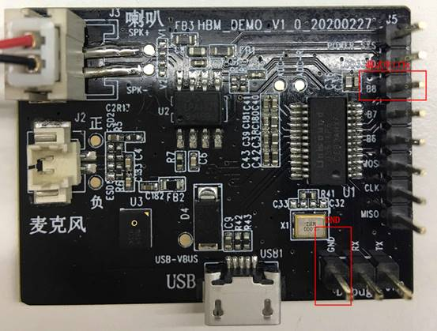
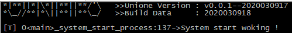
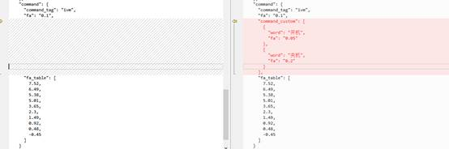

|
蜂鸟M离线方案开发指导手册
v1.0.4
|
为方便用户二次开发，源码中提供了大量的示例Demo，以供参考，相关源码可在“user\src\examples”路径下找到。
如果想要运行一个已有Demo，可通过配置“user\inc\user_config.h”内的宏定义来选择Demo功能，如运行ASR控制相关示例，需修改两个宏定义如下：
#define USER_RUN_DEMO 1 // 1：打开Demo功能
#define USER_RUN_DEMO_SELECT USER_DEMO_ASR_CONTROL // 选择ASR控制Demo
然后，运行./build.sh脚本，编译生成固件，烧录后重启开发板即可测试，默认唤醒词为“你好魔方”。
在一些常供电（特别是不易上下电）的产品上，如果二次开发过程中的漏洞未被测出而流至终端客户处，可能会出现使用一段时间后语音功能异常且难以重启恢复的问题，此时建议加上系统主动重置的处理机制，本方案提供了具体的参考实现，可在“user\inc\user_config.h”中通过配置AUTO_RESET_TIME宏来使用，保证最终产品的鲁棒性。
user_main()接口是USER层二次开发入口函数，相当于系统中的main函数，定制化代码需加入到user_main()函数中以编译运行，该函数可在“user\src\user_main.c”中找到。
从架构上看，该函数会在系初始化完毕后自动被调用，调用完毕后开始播放开机启动欢迎语，并开始进入循环等待实现watch dog喂狗操作，因此，作为一个限制，user_main()函数内代码不能是阻塞的，建议该函数中仅仅做系统初始化和事件注册操作，具体实现，可以参考Demo程序：user\src\examples\ hb_smart_ac.c。
以下代码，作为一个简单示例，实现了用户定制的语音识别指令的打印：
static void _custom_setting_cb(USER_EVENT_TYPE event,
user_event_context_t *context) {
event_custom_setting_t *setting = NULL;
if (context) {
setting = &context->custom_setting;
printf("Action: %s\n", setting->cmd); // 对应UDP平台定制基本action
printf("ASR word: %s\n", setting->word_str); // 识别词
printf("Reply list: %s\n", setting->reply_files); // UDP平台定制回复语编号列表[1, 2]
user_player_reply_list_random(setting->reply_files);// 随机播放一条回复语
}
}
static void _register_event_callback(void) {
user_event_subscribe_event(USER_CUSTOM_SETTING, _custom_setting_cb);
}
int user_main(void) {
printf("Hello World !\n");
_register_event_callback(); // 注册事件回调
return 0;
}
运行后说“你好魔方”唤醒设备，然后说“打开风扇”打印结果为：
Hello World !
Action: ac_power_on
ASR word: 打开风扇
Reply list: [104, 105, 106]
然后设备播报回复语可能是一下三条其中一条（根据当前设备状态）：
“已为您打开风扇，当前为自然风”
“已为您打开风扇，当前为正常风”
“已为您打开风扇，当前为睡眠风”
由于芯片本身只有1个硬件UART，默认定义用于外设通信，因此增加Software UART功能，设置B8引脚为log输出Tx端口，在开发板上丝印为“B8”，连接PC后使用常见串口工具（如putty、xshell、secureCRT等），配置波特率 (57600bps)、数据位 (8)、停止位 (1)、校验 (None)即可。

TX连接串口调试器RX，GND连接GND(开发板上只有1个GND接口，为方便烧录和调试，可以将烧录器和串口调试器连接在同一台电脑或USB Hub上，以保持共地，则串口调试器只需连接Tx（B8）引脚即可)，设备上电后，可在串口工具中观察到如下启动信息：

注：在连接PC进行调试时，如需掉电重启，请将端口串口调试器与主控板连接后掉电重启，否则可能由于串口调试器漏掉输入使开发板进入低电压模式无法掉电重启。
用户自定义离线控制指令，修改后的指令会使用默认的阈值，出现响应难或者误响应率偏高的问题。蜂鸟芯片支持方案阈值的自主计算，用户在使用某个指令时，可以根据自己项目的要求进行调整。
指令的阈值配置文件名为aik_debug.json或aik_release.json，前者对应的是debug固件，修改后者对应的是release固件。 当设备类型为“通用”时，文件路径为tools/scripts下；当设备类型为“智能语音红外控制器”时，文件路径为user/src/examples/res_housekeeper下；其他品类的阈值配置文件请到user/src/examples/res_xxx路径下对应修改。
图中示例代码，左侧为默认阈值配置，当需要把命令词“开机”的误识别率设为0.05次/分，命令词“关机”误识别率设为0.2次/分，在"command"字段下新增"command_custom"字段，里面填入需要设置的命令词和对应阈值要求即可，参考改动如图。保存后，运行build.sh生成新的bin文件，则完成了对命令词的阈值调整。
